|
PAR 4 Hole 1414 YARDS |
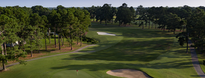
PAR 4 Hole 2417 YARDS |
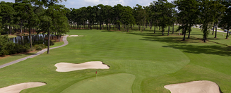
PAR 4 Hole 3397 YARDS |
|
Straightaway par 4 offers the chance for a |
This is a nervy tee shot as players must avoid |
A well struck drive will carry the bunkers |
|
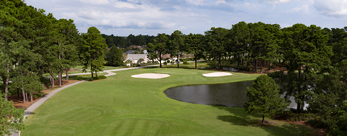
PAR 3 Hole 4190 YARDS |
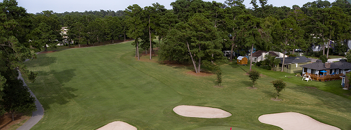
PAR 4 Hole 5404 YARDS |
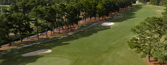
PAR 5 Hole 6566 YARDS |
|
Tricky one-shotter that is |
Long hitters can try and cut the corner of this |
A three-shot par 5. Avoid pushing your drive |
|
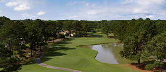
PAR 3 Hole 7173 YARDS |
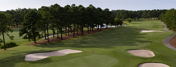
PAR 5 Hole 8541 YARDS |
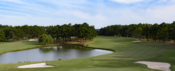
PAR 4 Hole 9390 YARDS |
|
Difficulty of the hole is largely determined |
Ideal drive is a draw, using a willow tree |
Pick a club you are comfortable with off the tee |
|
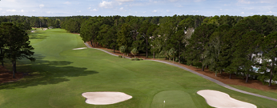
PAR 5 Hole 10529 YARDS |
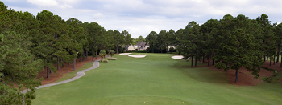
PAR 3 Hole 11205 YARDS |
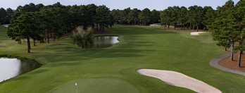
PAR 4 Hole 12361 YARDS |
|
After a pair of difficult holes, arrive at the tee |
Nothing complicated about the challenge. |
Avoid the temptation to get too aggressive. |
|
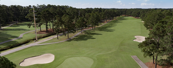
PAR 5 Hole 13529 YARDS |
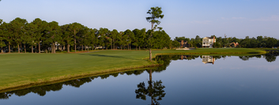
PAR 4 Hole 14391 YARDS |
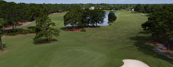
PAR 5 Hole 15429 YARDS |
|
This is a hole to be aggressive. |
Water runs the length of the hole |
The challenge on Palmetto’s longest par 4 is |
|
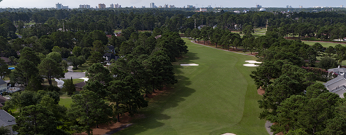
PAR 4 Hole 16422 YARDS |
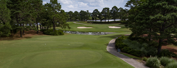
PAR 3 Hole 17179 YARDS |
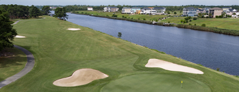
PAR 4 Hole 18468 YARDS |
|
Don’t let the three fairway bunkers fool you. |
This hole offers an elevated tee with a |
Playing along the Intracoastal Waterway, |